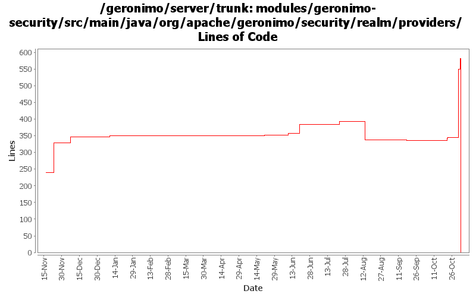

[root]/modules/geronimo-security/src/main/java/org/apache/geronimo/security/realm/providers

| Author | Changes | Lines of Code | Lines per Change |
|---|---|---|---|
| Totals | 96 (100.0%) | 802 (100.0%) | 8.3 |
| vamsic007 | 14 (14.6%) | 465 (58.0%) | 33.2 |
| djencks | 19 (19.8%) | 317 (39.5%) | 16.6 |
| rickmcguire | 6 (6.3%) | 9 (1.1%) | 1.5 |
| dwoods | 1 (1.0%) | 9 (1.1%) | 9.0 |
| gawor | 1 (1.0%) | 2 (0.2%) | 2.0 |
| prasad | 19 (19.8%) | 0 (0.0%) | 0.0 |
| kevan | 36 (37.5%) | 0 (0.0%) | 0.0 |
GERONIMO-3565. Modules distributed amongst framework/modules and plugins
0 lines of code changed in 19 files:
**GERONIMO-3582 Review CertificateChainLoginModule
o LoginModule should not add principals when login fails. Test is due.
o Other changes to bring CertificateChainLoginModule in line with http://java.sun.com/j2se/1.5.0/docs/guide/security/jaas/JAASLMDevGuide.html
**: This fix can use a thorough review.
50 lines of code changed in 1 file:
**GERONIMO-3575 Review CertificatePropertiesFileLoginModule
o LoginModule should not add principals when login fails. Added a test to detect if it does.
o Other changes to bring CertificatePropertiesFileLoginModule in line with http://java.sun.com/j2se/1.5.0/docs/guide/security/jaas/JAASLMDevGuide.html
**: This fix can use a thorough review.
61 lines of code changed in 1 file:
Remove redundant code. The catch block handles this part.
0 lines of code changed in 1 file:
Do not wrap LoginException with LoginException.
6 lines of code changed in 1 file:
**GERONIMO-3574 Review PropertiesFileLoginModule
o LoginModule should not add principals when login fails. NOTE: Adding a test for this would be good.
o Other changes to bring PropertiesFileLoginModule in line with http://java.sun.com/j2se/1.5.0/docs/guide/security/jaas/JAASLMDevGuide.html
**: This fix can use a thorough review.
74 lines of code changed in 1 file:
**GERONIMO-3571 Review PropertiesFileLoginModule
o LoginModule should not add principals when login fails. Added a test to detect the same.
o Other changes to bring PropertiesFileLoginModule in line with http://java.sun.com/j2se/1.5.0/docs/guide/security/jaas/JAASLMDevGuide.html
**: This fix can use a thorough review.
61 lines of code changed in 1 file:
Correct a type
1 lines of code changed in 1 file:
**GERONIMO-3570 Review SQLLoginModule
o LoginModule should not add principals when login fails. Added a test to detect the same.
o Other changes to bring SQLLoginModule in line with http://java.sun.com/j2se/1.5.0/docs/guide/security/jaas/JAASLMDevGuide.html
**: This fix can use a thorough review.
70 lines of code changed in 1 file:
don't wrap LoginException with LoginException
2 lines of code changed in 1 file:
**GERONIMO-3543 SQLLoginModule successfully authenticates non-existent users
o Fixed the LoginModule to throw FailedLoginException for non-existent user
o Added a test to detect regression
**: This commit can use a thorough review.
6 lines of code changed in 1 file:
GERONIMO-2925 implement pluggable obscuring of passwords in plans etc
2 lines of code changed in 1 file:
GERONIMO-3404 GERONIMO-3406 Fix the return values from login module lifecycle methods and add some javadoc and a little code cleanup
274 lines of code changed in 9 files:
GERONIMO-1716 Add usage of SimpleEncryption to PropertiesFileLoginModule and Admin Console
9 lines of code changed in 1 file:
This didn't used to work...
2 lines of code changed in 1 file:
GERONIMO-3246 Cleanup exception handling so stack traces for first failures are not discarded.
9 lines of code changed in 6 files:
GERONIMO-3251 PropertiesFile and SQL LoginModules should provide configurable "encoding" option for digest
o Added an encoding option to support hex and base64 encoding of passwords.
38 lines of code changed in 2 files:
GERONIMO-2687. Don't construct default and run-as subjects, get them from a login module. Also creates a separate server-security-config for the security config stuff you probably want to change. Also fixes lots of security problems, including mdb run-as handling.
12 lines of code changed in 6 files:
GERONIMO-3175 yet another overlooked change to exception signature as a result of previous change
2 lines of code changed in 1 file:
GERONIMO-2713 LDAP Realm fails to test and deploy
o The issue was fixed in branches\1.1 in rev 412812 to address GERONIMO-1791 GERONIMO-1817. The fix has not been merged into trunk.
o Applying the fix to branches\1.2 and trunk
6 lines of code changed in 1 file:
GERONIMO-2350 improve CertificateChainCallbackHandler error message
25 lines of code changed in 1 file:
GERONIMO-1880 To Allow configurable password digests during REALM Deployment
o Introduced a "digest" option in PropertiesFileLoginModule and SQLLoginModule
92 lines of code changed in 2 files:
GERONIMO-2537 Update the src headers in server/trunk/modules to be compliant with the new ASF src header and copyright policy (http://www.apache.org/legal/src-headers.html). I also did some cleanup of the src headers and tried to make them all a consistent format
0 lines of code changed in 36 files: